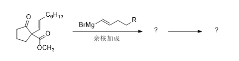
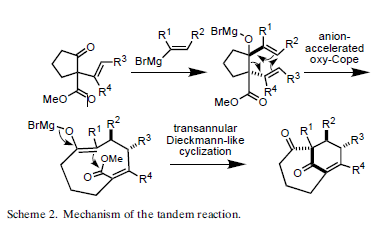
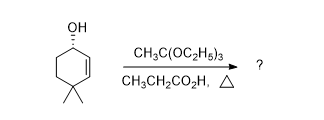
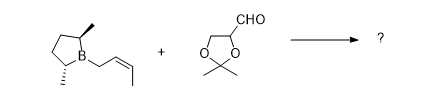
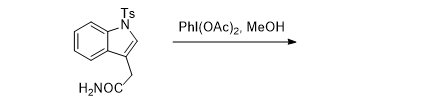
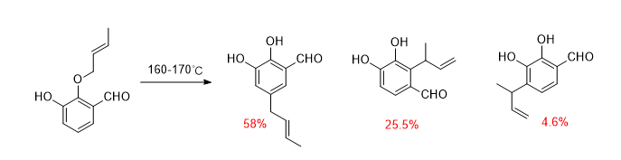
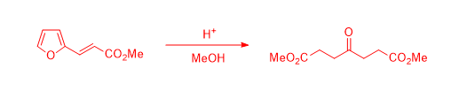
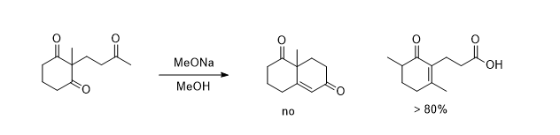
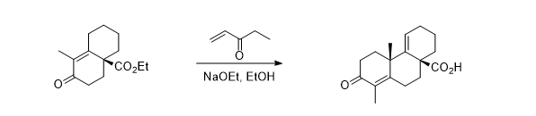

有机化学考研每日一题 v2
条评论题目来源比较杂，基本上是各个QQ群里出现过的，欢迎在下方评论添加 （如是图片可以放在百度云/图床，比如 https://sm.ms ）
反应篇
-
完成反应


- A Highly Efficient and Convergent Reaction for the Synthesis of Bridgehead Enone‐Containing Polycyclic Ring Systems.
- DOI: 10.1002/1521-3773(20000804)39:15<2714::AID-ANIE2714>3.0.CO;2-1
-
完成反应

-
完成反应

- 中科院2007年题
- J. Org. Chem. 1987, 52, 21, 4831-4832
- DOI: 10.1021/jo00230a043
- 不对称丙烯基硼化 Asymmetric Allylboration
-
完成反应@考研题，求出处

doi: 10.1080/00397910500287967
转化篇
推断题
- 已知化合物A，
机理篇
-
写出形成各个产物的机理

J. Org. Chem., 1991, 56 (7), pp 2591–2594
DOI: 10.1021/jo00007a063 -
写出下面反应的机理

-
写出下面一组反应机理

见南开2012年有机化学复试笔试

Question 3:
Total synthesis of Hinokione:
Reference: Snitman, D. L.; Himmelsbach, R. J.; Watt, D. S. J. Org. Chem., 1978, 43, 4758.
DOI: 10.1021/jo00419a011
合成篇
-
以乙酰乙酸乙酯及3-丁烯-2-酮为主要原料合成下列中间体：
-
用苯和不超过四个碳的有机原料及合适的无机试剂合成：
本文标题：有机化学考研每日一题 v2
文章作者：Michael Chen
发布时间：2019-02-10
最后更新：2022-02-20
原始链接：https://mchen.xyz/post/orc-daily-questions-v2.html
版权声明：本博客所有文章除特别声明外，均采用 CC BY-NC-SA 3.0 CN 许可协议。转载请注明出处！